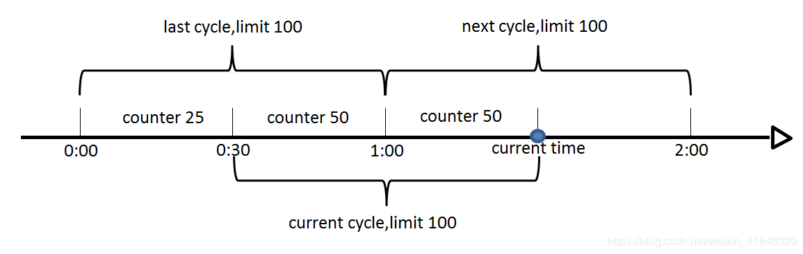
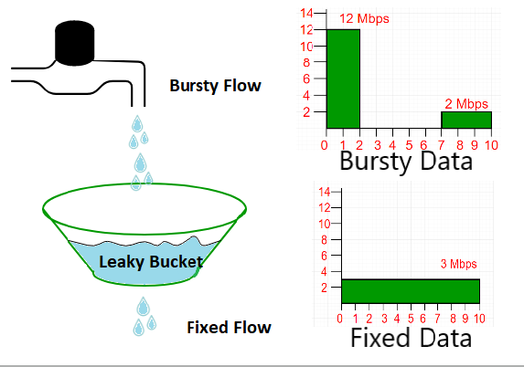
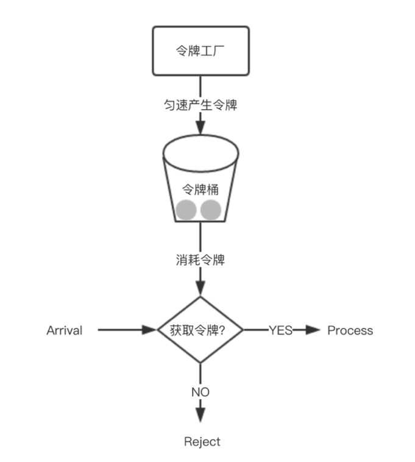

服务降级设计
当服务整体负载超出预设的上线阈值或即将到来的流量预计将会超过预设阈值时，为了保证重要或基本的服务能正常运行，拒绝部分请求或者将一些不重要或不紧急的服务或任务运行服务延迟使用或暂停使用。
流量高峰期短时请求量大，而服务能力有限，为了避免系统雪崩，而采用服务降级。
服务降级目标：保证核心服务可用；非核心服务弱可用甚至不可用。服务降级策略自动开启。
服务降级手段
服务降级手段：拒绝部分请求，关闭部分服务（业务相关）。
拒绝部分请求
1、拒绝部分老请求
减轻微服务请求处理数量，确保"新"请求正常响应。RPC队列方式（记录请求入队时间，在请求出队处理时，检查请求在队列等待时间，超过一定时间比如1s，直接丢弃）
2、优先级请求方式
非核心请求直接丢弃，服务的优先级通过配置中心配置。
3、随机拒绝方式
随机丢弃一定比例的请求，会出现网站一会可用，一会不可用的情况。
实际实践时采用第一种加第二种的方式，第一种作为服务降级的开启条件。
服务降级框架层次
集中式：在网关层做统一的服务降级。存在问题，网关层需要关注下面每一层的处理能力。
自治式：网关层、业务逻辑层、数据访问层分别实现服务降级。推荐采用这种，每层只关注自己的处理能力。
服务限流算法
上面说的降级算法的开启条件是请求等待被处理的时间。但在一般的场景下可以使用下面的限流算法。
计数器（固定窗口）算法
计数器算法是使用计数器在周期内累加访问次数，当达到设定的限流值时，触发限流策略。下一个周期开始时，进行清零，重新计数。
这个算法通常用于QPS限流和统计总访问量。具体的实现可以是这样的：对于每次服务调用，可以通过 AtomicLong.incrementAndGet()方法来给计数器加1并返回最新值，通过这个最新值和阈值进行比较。
该算法一个较严重的弊端：如果我在单位时间1s内的前10ms，已经通过了100个请求，那后面的990ms，只能眼巴巴的把请求拒绝，把这种现象称为"突刺现象"。
滑动窗口算法
滑动窗口算法是将时间周期分为N个小周期，分别记录每个小周期内访问次数，并且根据时间滑动删除过期的小周期。
如下图，假设时间周期为1min，将1min再分为2个小周期，统计每个小周期的访问数量，则可以看到，第一个时间周期内，访问数量为75，第二个时间周期内，访问数量为100，超过100的访问则被限流掉了。

由此可见，当滑动窗口的格子划分的越多，那么滑动窗口的滚动就越平滑，限流的统计就会越精确。此算法可以很好的解决固定窗口算法的临界问题。
漏桶算法
漏桶算法是访问请求到达时直接放入漏桶，如当前容量已达到上限（限流值），则进行丢弃（触发限流策略）。漏桶以固定的速率进行释放访问请求（即请求通过），直到漏桶为空。

在算法实现方面，可以准备一个队列，用来保存请求，另外通过一个线程池定期从队列中获取请求并执行，可以一次性获取多个并发执行。漏斗桶消除了突刺问题，但存在一个弊端是无法处理突发流量。
令牌桶算法
令牌桶算法是程序以r（r=时间周期/限流值）的速度向令牌桶中增加令牌，直到令牌桶满，请求到达时向令牌桶请求令牌，如获取到令牌则通过请求，否则触发限流策略

Google开源工具包Guava提供了基于令牌桶算法的限流工具类RateLimiter。初始化是提供每单位时间生成多少个令牌，然后通过tryAcquire()或acquire()获取令牌。
与漏斗相比，令牌桶的某些优势：
1、如果令牌桶中的存储桶已满，令牌将被丢弃，而不是数据包（数据包可以选择等待）。在漏斗桶中，数据包将被丢弃
2、令牌桶可以以更快的速率发送令牌以应对大型突发，而漏斗桶始终以恒定速率处理数据